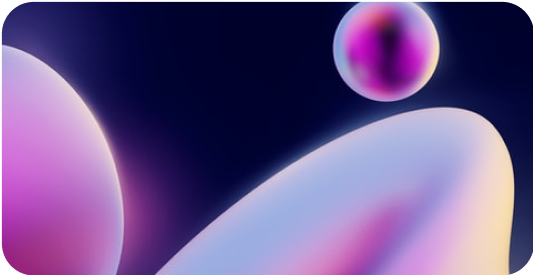

The most generous Cashback
in i-Gaming
The biggest payouts
you can get up to 25% of your
coins back
The simplest getting
withdraw cashback easy to account balance
The most frequent
get real cashback twice a week and play again
How does it work?
You play - Betclover returns some lost coins back. This feature is available for everyone from the beginning of using the platform.

Enjoy gaming
Play your favorite games and raise your cashback accordingly to the Rank.

Receive coins
Cashback is credited twice a week. The percent depends on users Rank - from 1% up to 25%.

Withdraw cashback
Withdraw your cashback immediately to account balance. And play for pleasure again!
Cashback for rank
The more you play on Betclover - the higher Rank and Cashback amount you will get. The most active users may get 25% back and enjoy the excellent gaming experience with the best advantages
Play 45 times in
Plinko Medium

0/2
0.00004 btc
Min. bet 0.0002 BTC
Play 45 times in
Plinko Medium
0/2
0.00004 btc
Min. bet 0.0002 BTC
Play 45 times in
Plinko Medium
0/2
0.00004 btc
Min. bet 0.0002 BTC
Play 45 times in
Plinko Medium
0/2
0.00004 btc
Min. bet 0.0002 BTC
Play 45 times in
Plinko Medium
0/2
0.00004 btc
Min. bet 0.0002 BTC
Play 45 times in
Plinko Medium
0/2
0.00004 btc
Min. bet 0.0002 BTC
Frequently Asked Questions
Staking and Farming will be separate activities on Betclover with different final results. Thus, tokens which will be locked for Farming will not be involved in Staking and receiving daily payouts.
The Betclover team is going to mint a part of not mined tokens from the total supply and provide those tokens for Farming purposes.
To be able to use Farming on Betclover you should have BTC
A part of the tokens from the Farming pool is automatically distributed among all participants. You may withdraw or compound your farming yield any time.
Everyone can individually choose what he wants to receive: Staking daily payouts in different currencies or receiving BTC Tokens as a Farming reward with a high APR. Moreover, players can stake some part of tokens and farm with the other part.
Farming will be available for BTC tokens, which were mined before the Listing and are
The APR is dynamic. It depends on the amount of BTC in the Farming pool and the amount of farming participants. The more tokens are locked - the lower is the APR
Disable Farming FEE:
0.5% disable farming fee if disable until 3 days
0.1% disable farming fee if disable after 3 days
Harvest Fee : 2.99% from total harvested amount.
This amount will be burnt by the team in the monthly BTC Burning.
0.5% disable farming fee if disable until 3 days
0.1% disable farming fee if disable after 3 days
Harvest Fee : 2.99% from total harvested amount.
This amount will be burnt by the team in the monthly BTC Burning.